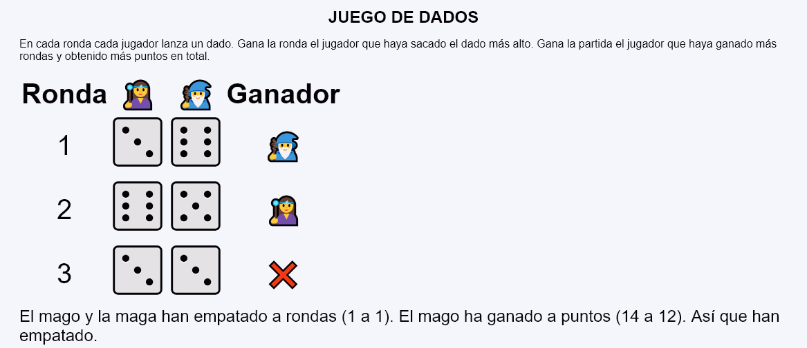
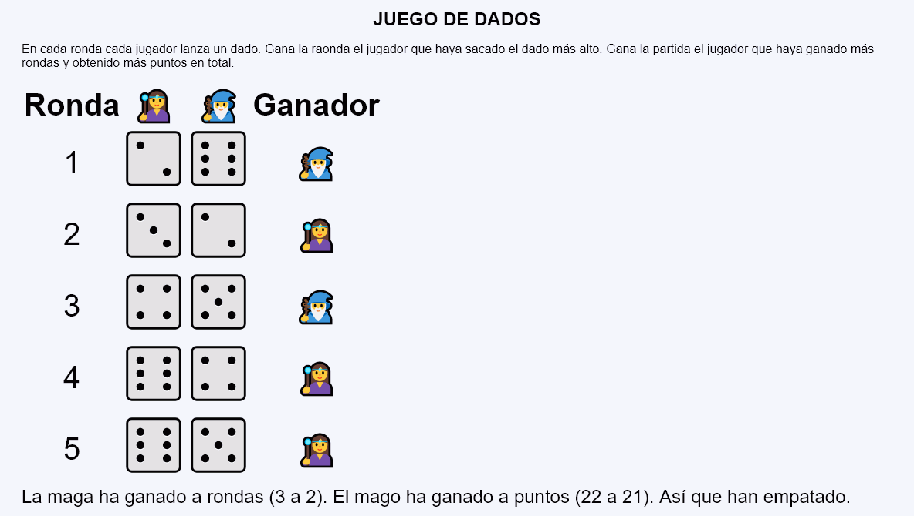

Juego de dados - Comentarios
- Al actualizar la página, se mostrará una nueva partida, con un número de rondas entre 2 y 6, al azar.
- Hay dos jugadores, un mago 🧙‍♂️ 🧙♂️ y una maga 🧙‍♀️ 🧙♀️
- Se mostrará el dado obtenido por cada jugador en cada ronda.
- Se indicará quién ha ganado cada ronda mostrando la maga, el mago o el símbolo de empate ❌ ❌. Gana cada ronda el que saque el dado más alto.
- Al final, se indicará qué jugador ha ganado más rondass y qué jugador ha ganado más puntos.
- Se indicará quién ha ganado la partida. Un jugador gana la partida si gana a rondas y a puntos.
- Capturas de pantalla de ejemplo:


